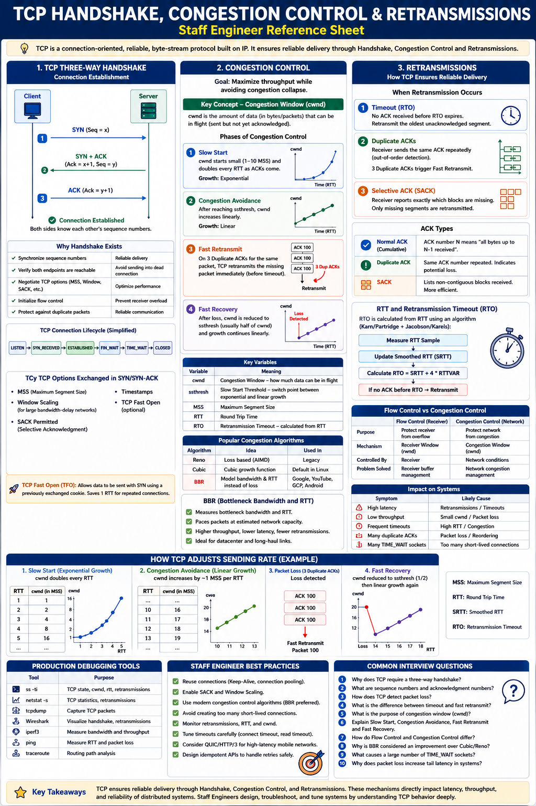

How TCP establishes connections, adapts to network conditions, and recovers from packet loss
The Big Picture
Every HTTP request, gRPC call, database query, and Kafka connection relies on TCP. TCP continuously adapts to network conditions to maximize throughput while ensuring reliable delivery. Understanding it explains why requests are slow, why throughput drops, and why HTTP/3 moved away from TCP.
TCP Three-Way Handshake
Before any data flows, both sides synchronize sequence numbers and negotiate options:
Step 1 — SYN
SYN, Seq=X
Client requests connection and proposes Initial Sequence Number
Step 2 — SYN+ACK
SYN, ACK=X+1, Seq=Y
Server accepts, sends its own sequence number
Step 3 — ACK
ACK=Y+1
Client confirms. Connection ESTABLISHED.
| Purpose | Why It Matters |
|---|---|
| Synchronize sequence numbers | Enables reliable, ordered delivery |
| Verify both endpoints alive | Avoid sending into dead connections |
| Negotiate TCP options | MSS, Window Scaling, SACK support |
| Initialize flow control | Prevent receiver buffer overflow |
The handshake costs 1 RTT before any data. At 100ms RTT, every new TCP connection adds 100ms overhead. This is why connection pooling and Keep-Alive matter so much in production.
TCP Connection Lifecycle
Congestion Control — How TCP Finds Its Speed
TCP continuously asks: "How fast can I send without congesting the network?" The answer is the Congestion Window (cwnd) — the max amount of unacknowledged data allowed in flight.
Slow Start
Probes network capacity quickly without assuming anything.
Congestion Avoidance
Grows carefully after reaching threshold.
Packet Loss — Fast Retransmit & Fast Recovery
Detection via Duplicate ACKs
Fast Recovery (not slow start)
Timeout-based Retransmission
Worst case — indicates severe loss or network failure.
Selective ACK (SACK)
Far more efficient than go-back-N.
ACK Types
| ACK Type | Meaning | Action |
|---|---|---|
| Normal ACK | All packets received up to N | Advance cwnd normally |
| Duplicate ACK | Gap detected — still waiting for N | 3rd dup → Fast Retransmit |
| Selective ACK (SACK) | Receiver reports exactly which segments it has | Retransmit only the gaps |
Modern Congestion Algorithms
| Algorithm | Detection Mechanism | Used In |
|---|---|---|
| Reno | Packet loss = congestion signal | Legacy systems |
| Cubic | Cubic growth function after loss | Linux default |
| BBR | Models bottleneck bandwidth + RTT (not loss) | Google, YouTube, GCP, Cloudflare |
Flow Control vs Congestion Control
| Aspect | Flow Control | Congestion Control |
|---|---|---|
| Protects | Receiver buffer | The network |
| Window used | Receiver Window (rwnd) | Congestion Window (cwnd) |
| Who decides? | Receiver | Network conditions |
| Problem prevented | Buffer overflow at receiver | Network congestion collapse |
| Signal | rwnd advertised in ACK | Packet loss / RTT changes |
Actual sending rate = min(cwnd, rwnd). Both windows constrain sending simultaneously.
RTT & Retransmission Timeout (RTO)
Fast Retransmit (3 dup ACKs) is much better than timeout-based retransmit because it doesn't reset cwnd to 1. Always monitor retransmission counts — high timeout retransmits indicate severe network problems.
Production Debugging
| Symptom | Likely Cause | Tool |
|---|---|---|
| High P99 latency | TCP retransmissions (timeout) | ss -ti, netstat -s |
| Low throughput | Small cwnd or packet loss | ss -ti, iperf3 |
| Frequent timeouts | High RTT or network issues | ping, traceroute |
| Many duplicate ACKs | Packet loss | tcpdump, Wireshark |
| Thousands of TIME_WAIT | Too many short-lived connections | ss -s |
| CLOSE_WAIT sockets | App not closing connections | ss -tp, app logs |
Staff Engineer Thinking
Junior
What are the 3 handshake steps?
Senior
Why are we seeing retransmissions?
Staff asks
Staff Engineer Design Implications
| Problem | Best Practice |
|---|---|
| Handshake overhead (1 RTT cost) | Connection pooling + HTTP Keep-Alive |
| High latency | TCP Fast Open (data with SYN) |
| Packet loss on retransmit | Enable SACK; use BBR congestion control |
| Tail latency spikes | Reduce retransmissions; tune buffers; optimize RTT |
| Too many TIME_WAIT | Reuse connections; tune tcp_tw_reuse |
| Mobile / high-latency | HTTP/3 over QUIC (no TCP HoL blocking) |
Modern TCP Enhancements
| Feature | Benefit |
|---|---|
| TCP Fast Open | Send data with SYN — eliminates 1 RTT on repeat connections |
| SACK | Retransmit only missing segments (not entire window) |
| Window Scaling | Supports high-bandwidth high-latency links (>64KB window) |
| BBR | Maximizes throughput while keeping RTT low; less bufferbloat |
| HTTP/3 (QUIC) | Eliminates TCP HoL blocking; 0-RTT resume; per-stream reliability |
Key Takeaways
